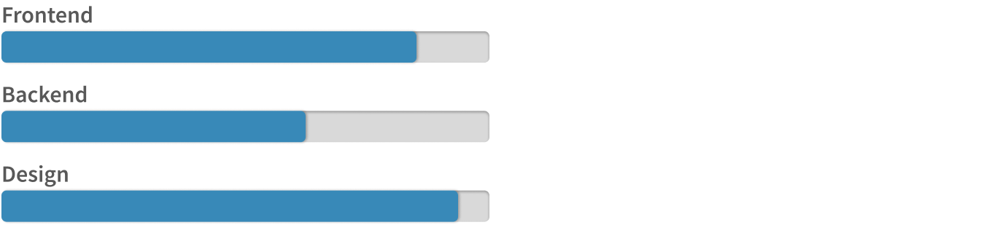
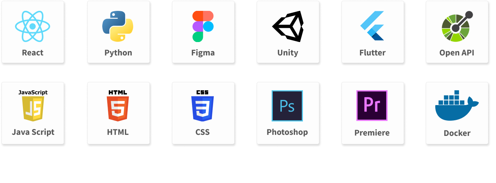

Wer bin ich?

Moin! Mein Name ist Lasse, und ich befinde mich derzeit im 6. Semester meines Medieningenieur-Studiums. Schon seit meiner Kindheit begeistere ich mich für Technik und ihre vielfältigen Anwendungsmöglichkeiten. Meine Leidenschaft für Kreativität zeigt sich besonders in meiner Fähigkeit zum Grafikdesign, wobei ich gerne mit Tools wie Photoshop und Figma arbeite, um ansprechende visuelle Konzepte zu entwickeln. Beim Coden liegt mein Fokus auf Projekten, die einen sichtbaren Output haben, sei es im Bereich des Web-Frontends, der App-Entwicklung oder sogar der Spieleprogrammierung. Dabei schätze ich besonders die Möglichkeit, innovative Ideen umzusetzen und Technologien zu nutzen, die einen echten Mehrwert bieten. Meine Begeisterung für Innovationen zeigt sich auch in meiner Erfahrung mit Virtual Reality, insbesondere mit Unity, sowie meiner Interesse an Künstlicher Intelligenz. Wenn Sie mehr über meine Fähigkeiten und Erfahrungen erfahren möchten, stehe ich Ihnen gerne zur Verfügung.
In meinem studienbegleitenden Praktikum bei b+m Informatik durfte ich das Facelift eines Kundenportals übernehmen. Die Konzeption wurde in verschiedenen Medien festgehlaten und die Umsetzung in React realisiert. Dieses Projekt hat mir die Gestaltung von User Interfaces sehr nah gebracht, wodurch mir klargeworden ist, dass UX/UI Design die Leidenschaft ist, die ich in Zukunft fortführen möchte.
Skills


Kontakt
Wenn Sie Fragen haben oder mit mir in Kontakt treten möchten, können Sie mich gerne per E-Mail oder Telefon erreichen. Ich freue mich darauf, von Ihnen zu hören!